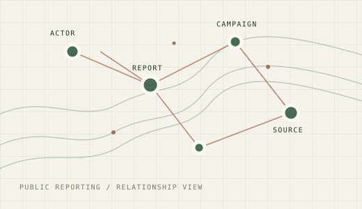
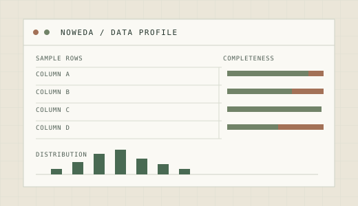
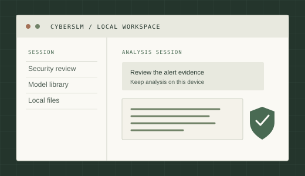
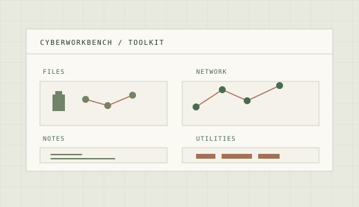
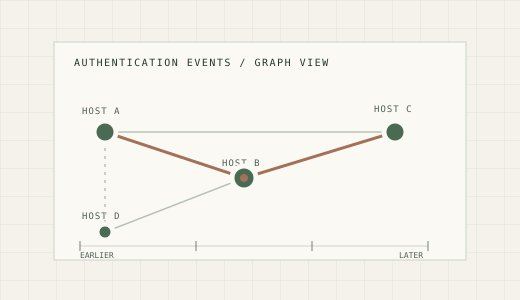
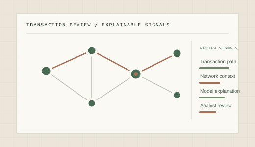
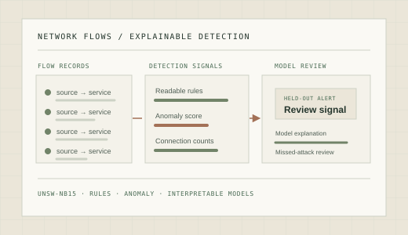

FEATURED PROJECT · THREAT INTELLIGENCE
Cyber Actor Atlas
An interactive map and dataset for exploring cyber actors described in public reporting.
Explore the atlas
Selected work across cybersecurity, AI, data, and open source.
Projects across cybersecurity, AI, and data.
FEATURED PROJECT · THREAT INTELLIGENCE
An interactive map and dataset for exploring cyber actors described in public reporting.
Explore the atlas
DATA TOOLS · EXPLORATORY ANALYSIS
A starting point for exploring a dataset, generating summaries, and spotting quality issues.
View on PyPI

OPEN SOURCE · SECURITY TOOLS
Utilities for security research and CTF practice, gathered in one workspace.
View on GitHub
SECURITY RESEARCH · GRAPH ANALYTICS
Using graph analytics to study unusual behavior in authentication events.
View on GitHub
DATA SCIENCE · FINANCIAL CRIME
Comparing explainable signals for reviewing synthetic transaction activity.
View on GitHub
SECURITY RESEARCH · NETWORK-FLOW DETECTION
A one-notebook benchmark that withholds UNSW-NB15 attack categories from training and compares known-risk, novelty, and two-lane review queues at fixed budgets.
View on GitHub
I contribute documentation, examples, and fixes to these projects. View my GitHub contributions.
Documentation for package specifications, environments, shell activation, channels, and CLI usage.
Documentation for restart behavior, NVIDIA GPU access, and exporter formats.
Documentation and Python client examples for ingestion, STIX objects, storage, and observables.
Documentation for organization accounts, API tokens, Twine, keyring, and Trusted Publishing.
Language and consistency improvements across security cheat sheets.
Security Solution API guidance for exception lists linked to detection rules.
Theme-aware extension CSS guidance and file browser context-menu behavior.
Logging architecture documentation covering default loggers and task logging.